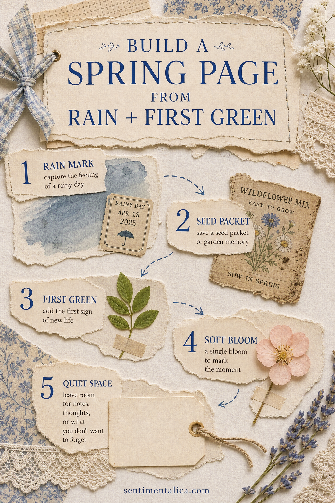
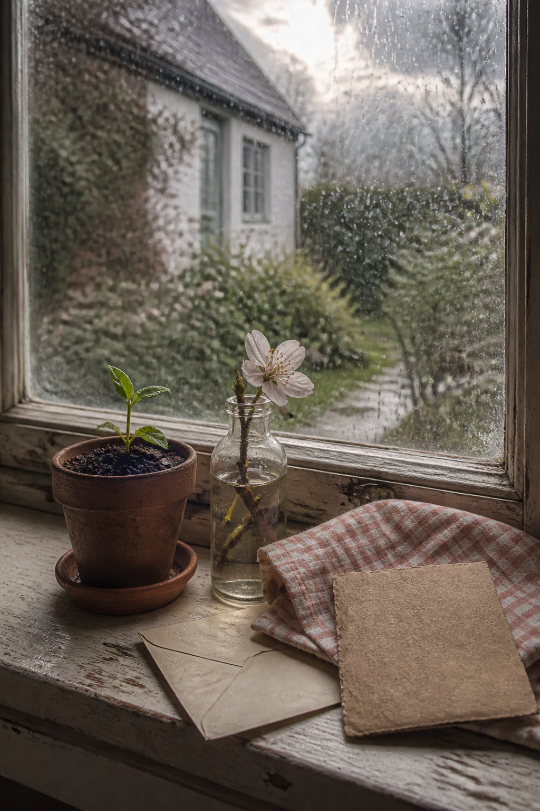

Spring pages do not need a meadow of flowers to feel seasonal. The quieter signs are often more personal: rain on the window, the first green shoot, a seed packet saved from the kitchen drawer, and the pale color of a morning that has not warmed yet.
Use those small clues to build a page that feels like early spring rather than a general floral collage.

Begin with a rainy-day base
Choose cream or lightly tea-stained paper, then add one translucent patch of rain blue. It can be watercolor, a torn piece of tracing paper, or a thin blue-gray scrap. Keep the edges imperfect. A tiny date or weather note makes the color feel connected to a real day.
Add something that suggests waiting
A seed packet fragment, garden label, paper sleeve, or handwritten planting list brings in the hopeful part of spring. You do not need the whole packet. A torn corner with faded typography gives the page history without taking over the composition.

Use one first green
One pressed leaf or a small green paper shape is stronger than a scattered handful. Place it where it can connect the rainy blue to a warm neutral. If you are using a real leaf, let it dry completely before sealing it into the page.
Let a single bloom be enough
Add one pale flower in blush, buttercream, or faded lilac. Think of it as punctuation rather than the whole sentence. Repeat its color only once—perhaps in a thread, a narrow ribbon, or one line under your writing.
Keep a quiet place for the day
Finish with a blank tag or small journaling card. Write what the air smelled like, what had just started growing, or what you were waiting for. These observations give the decorative pieces their meaning.
Balance the page before you glue
Lay the five pieces down without adhesive and look at the page from a little distance. Keep the darkest element low or near an outer corner, then let the leaf point inward toward the writing space. If every object is the same size, trim one piece smaller. A mix of one main shape, two medium details, and two tiny accents feels natural.
When the arrangement feels settled, photograph it with your phone. Glue the base and largest piece first, then use the photo to return the smaller details to their places. This removes the pressure to remember a layout while you are handling wet glue.
Try the idea as a seasonal series
Repeat this structure once each month. In early spring, use rain and the first shoot. Later, replace the rain mark with brighter sky blue, swap the seed packet for a garden note, and add a fuller leaf. The repeated structure makes the changing season visible without requiring a completely new style every time.
If you want a coordinated source of country-spring imagery, the Spring Farm watercolor image pack can extend this palette with gentle rural details. Use one image as an accent and let your own scraps and notes remain the story.
Image note: Some visuals in this article were created with AI and curated by Sentimentalica.